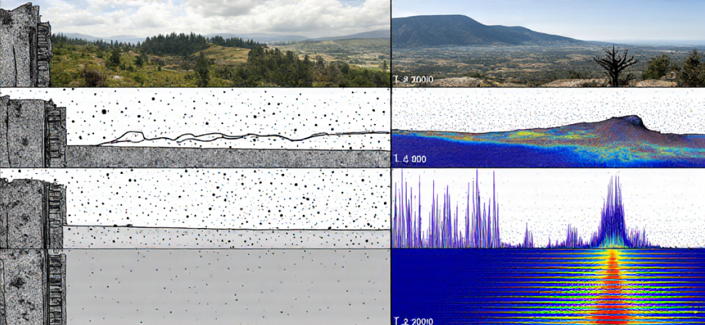
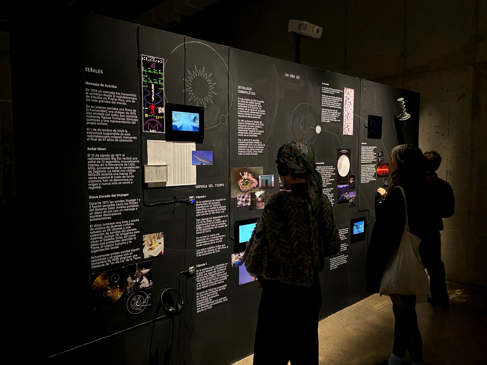
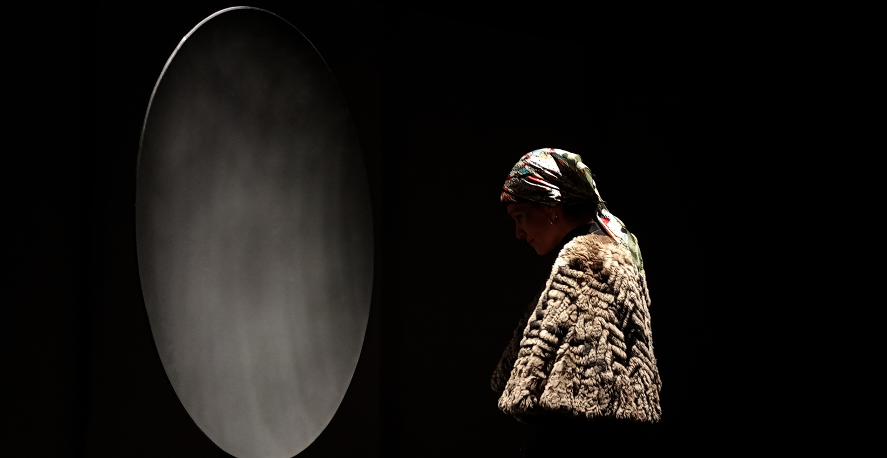
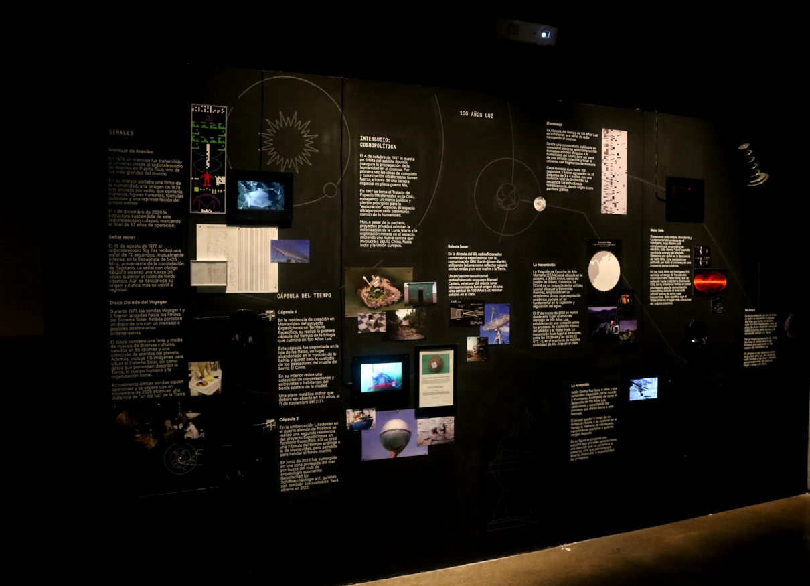

Lenguaje liminal
Liminal Language
What sonic traces can we send into the cosmos to imagine other forms of relationship — more sensitive and non-extractivist — within and beyond the planet?
- En
Liminal Language explores the possibility of visualizing what remains outside the perceptible field.
The pieces draw from the theosophical investigations of Annie Besant and C. W. Leadbeater in Thought-Forms,
where thoughts, emotions, and intentions are described as energetic forms that can be translated into visual
diagrams and chromatic compositions.
The works are developed through meditative observation sessions, somatic perception exercises,
and records documenting variations in color, shape, movement, and gesture in relation to different
emotional and environmental states. From these processes, the project constructs a visual taxonomy of
perceptual and affective experiences, understanding the image as an interface between perceptible and imperceptible worlds.
- Es
Lenguaje Liminal explora la posibilidad de visualizar aquello que permanece fuera del campo perceptible.
Las piezas toman como punto de partida las investigaciones teosóficas de Annie Besant y C. W. Leadbeater en *Thought-Forms*,
donde pensamientos, emociones e intenciones son comprendidos como formas energéticas capaces de traducirse en
diagramas visuales y composiciones cromáticas.
Las obras se desarrollan a través de sesiones de observación meditativa, ejercicios de percepción somática
y registros que documentan variaciones de color, forma, movimiento y gesto en relación con distintos estados
emocionales y ambientales. A partir de estos procesos, el proyecto construye una taxonomía visual de experiencias
perceptuales y afectivas, entendiendo la imagen como una interfaz entre mundos perceptibles e imperceptibles.

Amanecer sobre el humedal río Damas, 2022.

Visual documentation authored by the project team,
Exhibition documentation at Sala Laboratorio, Parque Cultural de Valparaíso – Ex Cárcel 2026.

Visual documentation authored by the project team, Exhibition documentation at Sala Laboratorio, Parque Cultural de Valparaíso – Ex Cárcel 2026.

Visual documentation authored by the project team, Exhibition documentation at Sala Laboratorio, Parque Cultural de Valparaíso – Ex Cárcel 2026.
Visual documentation authored by the project team, Exhibition documentation at Sala Laboratorio, Parque Cultural de Valparaíso – Ex Cárcel 2026.